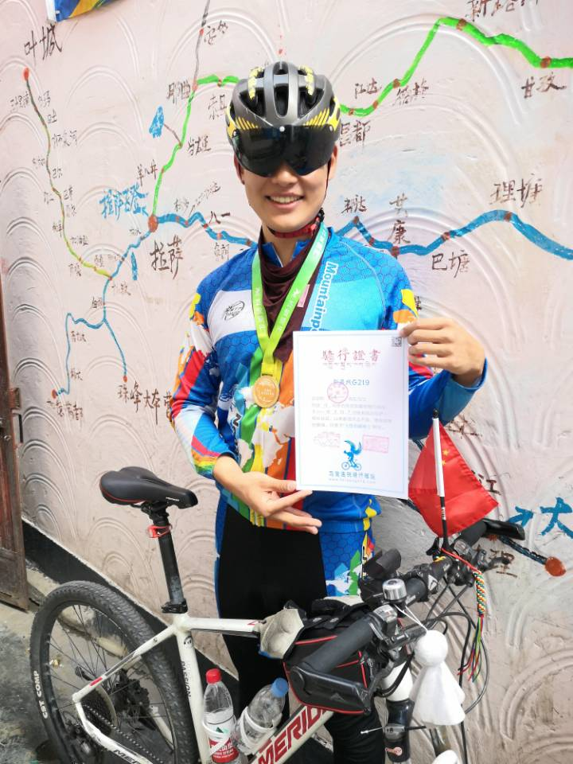
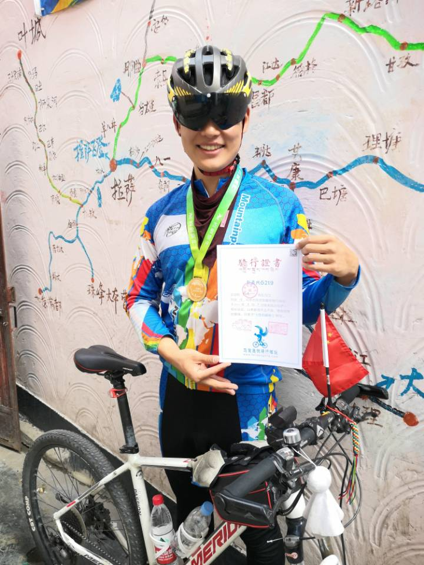

I am looking for a Ph.D position starting at fall 2023.
Website format from Xingyi Zhou.
Last updated Sept. 2022
Research Overview
Since the age of 13, deeply touched by Foundation by Isaac Asimov, my dream has been to explore the galaxy. Unable to fulfill this mission with existing technology, I reoriented my goal to create an AI who can think like humans (just like the dream of Prof. Jürgen Schmidhuber), which we call Artificial General Intelligence (AGI) today, and explore the galaxy together. When humans perceive the surrounding environment, we see (2D vision), touch (3D vision), and hear (audio) simultaneously to understand (language). Therefore, AGI’s understanding should likewise be based upon the complementary perception of different modalities. Toward this goal, I conduct research on Multimodality Perception inspired by human perception. Currently, my research interest primarily lies in 3D Perception and Vision-Language Models.
Recently, human-like AI perception has come closer to reality. Large-scale foundation models pre-trained with multimodal data provide promising unified frameworks for Multimodal Perception. In particular, Contrastive Language-Image Pretraining (CLIP) trains both an image and text encoder, and conducts contrastive learning in feature space. It simulates the process of parents pointing to objects to assist children in recognizing them. In this simple relationship, children not only learn to classify objects but also to segment them without any pixel-wise mask annotations or box annotations. In light of this insight, I have become passionate about realizing the perception potential of CLIP for other visual tasks.
DepthCLIP, which I directed as a co-first author, expanding upon CLIP, reveals that humans learn to predict depth not by pixel-wise depth annotation, but by relative depth semantics. A child is taught “this tree is far, and that bus is close.” Consequently, he or she builds a semantic depth understanding of seen monocular images, indicating which object is near, and which object is far. Together with my collaborators, I found that CLIP also learns from a mutual understanding of semantic language-image concepts, and thus has the same ability to distinguish relative depth as humans. Given such insight, to conduct zero-shot training-free monocular depth estimation, I leveraged CLIP to obtain the semantic depth response of monocular images, then designed a projection scheme to obtain the quantified depth prediction. Surprisingly, DepthCLIP surpasses most existing unsupervised methods and even approaches early fully-supervised networks, which demonstrates that AI could acquire competent perception by simulating human perception.
Publications
(* indicates equal contributions, † indicates the corresponding author)
2022
 PointCLIP V2: Adapting CLIP for Powerful 3D Open-world Learning
PointCLIP V2: Adapting CLIP for Powerful 3D Open-world Learning
Xiangyang Zhu*, Renrui Zhang*, Bowei He,
Ziyao Zeng, Shanghang Zhang, Peng Gao
arXiv technical report, 2022, submitted to a top-tier conference
code
We introduce a realistic shape projection module, and leverage large-scale language models to automatically design 3D-semantic prompt.
Our approach significantly surpasses PointCLIP by +42.90%, +40.44%, and +28.75% accuracy on three datasets for zero-shot 3D classification.
iQuery: Instruments as Queries for Audio-Visual Sound Separation
Jiaben Chen, Renrui Zhang, Dongze Lian, Jiaqi Yang,
Ziyao Zeng, Jianbo Shi
Accepted by CVPR 2023
code
We re-formulate visual-sound separation task and propose Instrument as Query (iQuery) with a flexible query expansion mechanism.
We demonstrate state-of-the-art performance, with up to 44.2 % improvement of SDR on MUSIC benchmark.
 Can Language Understand Depth?
Can Language Understand Depth?
Renrui Zhang*,
Ziyao Zeng*, Ziyu Guo, Yafeng Li
Accepted by ACM Multimedia 2022 as Brave New Idea (Accepte Rate=12.5%)
code
We are the first to conduct zero-shot adaptation from the semantic language knowledge to quantified downstream vision tasks and perform zero-shot training-free monocular depth estimation.
Our DepthCLIP surpasses existing unsupervised methods and even approaches the early fully-supervised networks.
2021
 DSPoint: Dual-scale Point Cloud Recognition with High-frequency Fusion
DSPoint: Dual-scale Point Cloud Recognition with High-frequency Fusion
Renrui Zhang*,
Ziyao Zeng*, Ziyu Guo, Xinben Gao, Kexue Fu, Jianbo Shi†
arXiv technical report, 2021
code
To deal with point cloud processing, we proposed DSPoint to conduct dual-scale processing: one by point-wise convolution for fine-grained geometry parsing, the other by voxel-wise global attention for long-range structural exploration.
We design a co-attention fusion module for feature alignment to blend local-global modalities, which conducts inter-scale cross-modality interaction by communicating high-frequency coordinates information.
 VT-CLIP: Enhancing Vision-Language Models with Visual-guided Texts
VT-CLIP: Enhancing Vision-Language Models with Visual-guided Texts
Longtian Qiu, Renrui Zhang, Ziyu Guo,
Ziyao Zeng, Yafeng Li, Guangnan Zhang
arXiv technical report, 2021
To improve downstream adaptation of Contrastive Vision-Language Pre-training (CLIP), we propose VT-CLIP to enhance vision-language modeling via visual-guided texts.
Specifically, we guide the text feature to adaptively explore informative regions on the image and aggregate the visual feature by cross-attention.
 Twitter Emotion Classification
Twitter Emotion Classification
Yiteng Xu*,
Ziyao Zeng*, Jirui Shi*, Shaoxun Wu*, Peiyan Gu*
Final Project of CS181 Artificial Intelligence, 2021 Fall, ShanghaiTech University
code
We aim deal with twitter emotion classification by implementing Naive Bayes-based methods and DNN based methods with some adaptations like TF-IDF.
We provide throughout ablation studies, visualizations, and error mode analysis. We obtained comparable results in this task with existing methods.
 Generalized DUQ: Generalized Deterministic Uncertainty Quantification
Generalized DUQ: Generalized Deterministic Uncertainty Quantification
Zhitong Gao*,
Ziyao Zeng*
Final Project of CS282 Machine Learning, 2021 Spring, ShanghaiTech University
We propose Generalized DUQ to extend the original uncertainty estimation of only utilizing its nearest centroid to utilize the nearest k centroids.
Compared with DUQ, we achieve a better generlization on Two Moons, FashionMNIST VS MNIST/NotMNIST, and CIFAR-10 VS SVHN.
2020
Seek Common while Shelving Differences: A New Way for dealing with Noisy Labels
Zhitong Gao*,
Ziyao Zeng*
Final Project of CS280 Deep Learning, 2020 Fall, ShanghaiTech University
We propose SCSD, which combines both the benefits of “cross training” and “agreement” by introducing a tri-net framework, to deal with learning with noisy labels.
Extensive experimental results on corrupted data from benchmark datasets including MNIST, CIFAR-10, CIFAR-100 demonstrate that SCSD is superior to many state-of-the-art approaches.
My Path towards Enterprise
Besides my CS major, I minor in Innovation and Entrepreneurship at ShanghaiTech University, as part of which I attended Entrepreneurial Mindshift Program offered by Babson Collegefor two weeks in March 2021
I believe the purpose of research is to address problems the world is facing and to benefit society. Historically, momentous technological developments have led to significant social advances. The reformation of the steam engine released laborers from certain types of toil, and the invention of the computer has likewise resulted in the declining economic role of labor in repetitive tasks. I believe the next evolution of productivity will be the automation and intellectualization brought by AI technology, which, I am optimistic, will further liberate humans’ creativity and wisdom.
Many AI technologies currently emerge from applications in real-world industrial problems. With my training in Entrepreneurship, I have the aptitude to scrutinize the inclination and pain points of the industrial field, so as to pilot hands-on research that generates tangible and influential outcomes. One day, with this grounding, I aspire to transform my research achievements into a startup and bring value to more people.
Towards this goal, being in this cosmopolitan city——Shanghai, I have been involved in various industrial exhibitions and entrepreneurship forums like WAIC,Vision China, Laser Photonics China, and CME, among others, so as to catch up with contemporary AI application in industry, and think about what contribution I could bring to this field.
Other things about myself
I'm a disciplined body builder.
"Discipline is doing what you hate to do, but do it as you love it."
I always enforce such discipline not only into my body-building but my work and life.

Besides, I'm an amateur sci-fi novelist.
I continuously think about the formation of technology and society in the future, especially their influence on human beings. With the development of AI technology, the field of careers will be totally shaped within a few decades, which is related to everyone's benefit. It's my duty to foresee this transformation and try my best to turn it into a good way. As a sci-fi lover, my favoriate novelist is Isaac Asimov with his great work Foundation
Link to my sci-fi works
I'm an amateur Unity game developer, previous supervised by Brain Cox, screenshots of my previous works have been shown below.
Snow Ranger
 Darkside
Darkside


I'm also an amateur composer, conducter, pianist, trombone player.
I have been playing Tarot since 2014, familiar with Thoth and Shadowflower, dedicated to combining Tarot with modern psychology to serve as a tool for consciousness.
I'm excited about all kinds of voluntary especially those related to environment protection.
I believe it's our instinctive duty to preserve the integrity of the earth (at least until we could immigrate to other planets).
Currently, I'm volunteering at WWF-China and Greenpeace


 
